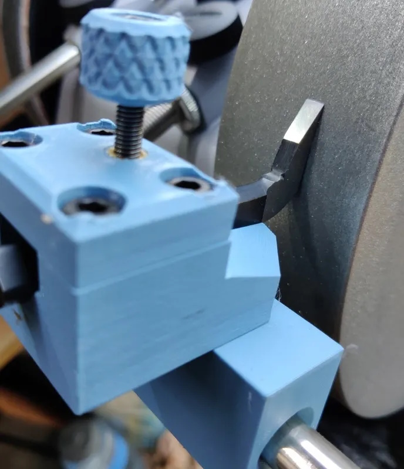
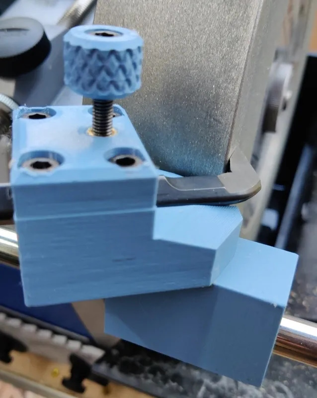

|
|
|
Traditional Router Plane Blade |
|
Alan Budden's 3D-printed jigs |
|
|

Grinding the blade’s bottom side |

Grinding the blade’s top side on the side of the grinding wheel |
Alan Budden (Dr.AI on the Tormek Forum) posted links in 2023 to some jigs which can be 3D-printed and used for sharping the traditional blades.
Alan created two versions of these jigs:
Links to the Printables.com web site where Alan published these designs are below.
The files needed to print Alan Budden's 3D-printable sharpening jigs are available at Printables.com: